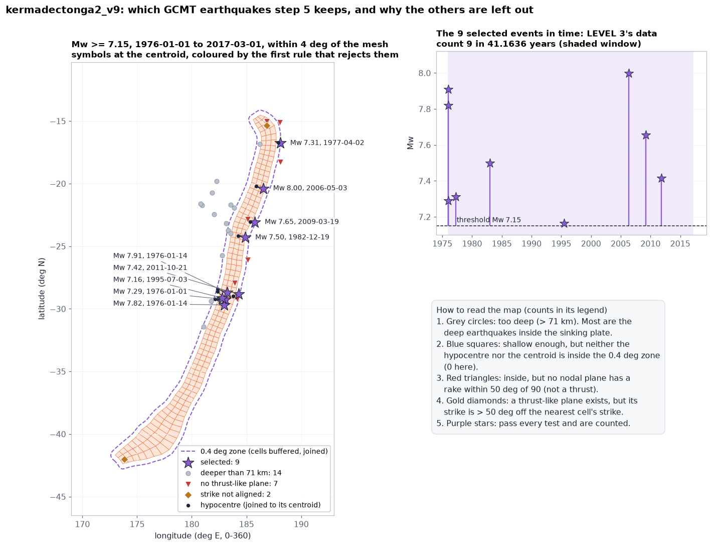

4-5. Earthquake catalogue
The logic tree proposes thousands of possible earthquake rates; the earthquakes that really happened say which ones are believable. Step 4 downloads the worldwide Global CMT catalogue, and step 5 keeps only the large earthquakes that happened on this zone's plate interface, using PTHA18's own rule. The result is a count and a time span that LEVEL 3 of the engine uses to re-weight the branches.
www.ldeo.columbia.edu/~gcmt (internet, once). Step 5: those files and step 2's mesh data/slab2/unit_source_grid.npydata/gcmt/*.ndk (the cached catalogue), data/gcmt/gcmt_catalogue_1976_present.csv (step 4), data/gcmt/<zone>_gcmt_subset.csv (step 5)Where in the code: templates/step4_fetch_gcmt.py.tmpl, templates/step5_subset_gcmt.py.tmpl (a port of PTHA18's gcmt_subsetter.R), templates/step6_write_input.py.tmpl read_gcmt_subset(), python_logic_tree_v12/run_logic_tree.py (LEVEL 3 inputs) and pyptha_v12/rates.py compute_updated_logic_tree_weights().
At a glance
A funnel: the whole world's catalogue goes in at the top, five tests remove every earthquake that is not a large thrust on this interface, and what remains (a count over a known time span) goes to the engine. The numbers are kermadectonga2_v9's.
What GCMT is
The Global Centroid Moment Tensor (GCMT) project analyses every earthquake of about magnitude 5 and above worldwide since 1976 and publishes, for each, how big it was, where, and how the fault moved. A few terms, in plain words:
Hypocentre
The point where the rupture started, found from the first seismic waves to arrive. GCMT copies it from another catalogue (the PDE, line 1 of each record). Its depth is the one step 5 tests.
Centroid
The centre of the whole rupture, where the slip was on average, found from the long-period waves. For a big earthquake it can be tens of km from the hypocentre. Step 5 uses it for the location test and to find the nearest cell.
Moment tensor and Mw
Six numbers describing the forces of the earthquake. Their size gives the seismic moment M0 (fault area x slip x rock stiffness), and from it the moment magnitude Mw.
Mw from GCMT, as PTHA18 does it. Step 5 computes the magnitude from the moment tensor (NDK line 4), not from GCMT's own scalar moment:
Mw = 2/3 x ( log10 M0 - 9.05 ) The sum runs over the full symmetric tensor (the 3 diagonal terms once, the 3 off-diagonal terms twice). GCMT gives the tensor in dyne-cm; x 10-7 converts to N m. 9.05 is rptha's
M0_2_Mw constant (not the more common 9.1, which would add 0.033 to every magnitude). The step 5 docstring states that this reproduces all 122 magnitudes in PTHA18's list to machine precision, and that the NDK scalar moment does not.
Example, the 2009-03-19 Tonga event: exponent 27, Mrr 3.280, Mtt -0.196, Mpp -3.090, Mrt -0.245, Mrp 0.190, Mtp -1.150, so M0 = 3.405 x 1020 N m and Mw = 2/3 x (20.532 - 9.05) = 7.655, the value in the subset file (7.654708).
Step 4: download
GCMT publishes its catalogue as plain-text NDK files: 5 fixed lines per earthquake. The real record of the 2009 Tonga event, from the cached jan76_dec20.ndk:
PDEW 2009/03/19 18:17:40.9 -23.05 -174.66 34.0 7.0 7.6 TONGA ISLANDS REGION C200903191817A B:127 327 50 S:122 295 50 M:127 334 150 CMT: 1 TRIHD: 15.8 CENTROID: 12.3 0.1 -23.08 0.01 -174.23 0.01 49.1 0.3 FREE S-20090615125906 27 3.280 0.014 -0.196 0.008 -3.090 0.009 -0.245 0.031 0.190 0.028 -1.150 0.006 V10 3.309 85 208 0.178 5 19 -3.493 1 109 3.401 205 44 98 14 46 82
| line | what it holds | what the code reads |
|---|---|---|
| 1 (hypocentre, from the PDE) | source, date, time, latitude, longitude, depth, two magnitudes, region | date, hypocentre lat/lon, depth (steps 4 and 5) |
| 2 (CMT header) | event name, data used, inversion type | nothing |
| 3 (centroid) | time shift, centroid lat, lon, depth, each with its error | centroid lat (token 4) and lon (token 6) (step 5) |
| 4 (moment tensor) | exponent, then Mrr Mtt Mpp Mrt Mrp Mtp, each with its error | exponent and the 6 components, for Mw (step 5) |
| 5 (derived) | eigenvalues, scalar moment, then the two nodal planes: strike dip rake, strike dip rake | the last 6 numbers: 205 44 98 and 14 46 82 (steps 4 and 5) |
- Files. One large cumulative file,
jan76_dec20.ndk(1976 to 2020, 23 MB), plus one monthly file per month from January 2021 to the current month,NEW_MONTHLY/<year>/<mon><yy>.ndk, all fromhttps://www.ldeo.columbia.edu/~gcmt/projects/CMT/catalog/. A month GCMT has not published yet gives an HTTP 404 and is skipped (the final kermadectonga2 run skipped June to September 2026). - Cache. Each file is saved in
data/gcmt/and never downloaded again; a re-run reads the copies (66.ndkfiles in kermadectonga2_v9). To work offline, copy the.ndkfiles of another example intodata/gcmt/. The download usescertifi's certificate bundle, because some Windows Python installs do not complete the server's certificate chain (comment in the code). - Parse. Every 5-line block becomes one row: date, hypocentre lat/lon/depth, and the two nodal planes (
parse_ndk()). kermadectonga2_v9: 59,736 events. - Window and duplicates. Keep the dates from 1976-01-01 to 2017-03-01, both included, and drop rows with the same date, position and depth (the files do not overlap today, the check is a safety net): 47,689 events.
- Write
data/gcmt/gcmt_catalogue_1976_present.csvwith the columnsdate, lat, lon, depth_km, strike1, dip1, rake1, strike2, dip2, rake2.
.ndk files, because it also needs the centroid (line 3) and the moment tensor (line 4). The CSV is a readable export of the catalogue. The monthly files since 2021 lie outside PTHA18's window, so they do not change any result; they are fetched because the window is a setting that could be moved.parsing NDK records ... 59736 events parsed (worldwide, all magnitudes/depths) 47689 of 59736 fall in [1976-01-01, 2017-03-01] (deduplicated across the overlapping monthly/cumulative files)
Log from kermadectonga2_v9/run_final.log, step 4. Code: templates/step4_fetch_gcmt.py.tmpl download_ndk(), parse_ndk().
The window: 1976-01-01 to 2017-03-01
LEVEL 3 compares a count of earthquakes with the rate each branch predicts over a duration. The two must belong together: the count must be the number of earthquakes that happened during exactly that duration.
- Start, 1976-01-01: the GCMT catalogue begins in 1976.
- End, 2017-03-01: PTHA18's own cutoff (its report, section 3.7.3). With the same end, this run's count can be compared with PTHA18's; the official LEVEL 3 data (
official_gcmt_observations.csv) uses this same duration. - Duration = (2017-03-01 - 1976-01-01) in days / 365.25 = 15,035 / 365.25 = 41.1636 years, computed the same way in steps 5 and 6.
Why not "until today"? a v1 mistake
v1 of the pipeline used today's date as the end. That added almost a decade of earthquakes, so the count and the duration no longer matched PTHA18's pair (9 events in 41.16 years on kermadectonga2), and the from-scratch LEVEL 3 update could not be compared with the official one by construction. From v2 on, the end is PTHA18's (step 4's docstring).
To use a different window, change WINDOW_START and WINDOW_END in all three generated scripts, step4_fetch_gcmt.py, step5_subset_gcmt.py and step6_write_input.py: each has its own copy of the two constants (step 6 computes the duration from its own copy).
Step 5: PTHA18's selection rule
A subduction zone has many kinds of earthquakes: deep ones inside the sinking plate, normal faults in the bending plate, sideways (strike-slip) ones, and the interface thrusts on the plate boundary itself, the ones the source model is about. PTHA18's rule (its gcmt_subsetter.R, reimplemented in step 5) keeps an earthquake only if it passes all of these tests, applied in this order in the code:
figures_src/make_seismicity.py) to every event of Mw ≥ 7.15 within 4° of the mesh; tests 1 and 2 are cheap and run first, as in the code.Each test, and why
- Depth ≤ 71 km (
MAX_DEPTH_KM). The plate interface where megathrust earthquakes happen is shallow; deeper earthquakes are inside the sinking plate and do not make interface tsunamis. The depth tested is the hypocentral (PDE) one of NDK line 1. The step 5 docstring notes that using the centroid depth instead adds a spurious event on kurilsjapan (not re-checked here). - Mw ≥ 7.15 (
THRESHOLD_MW). The engine's scenarios start at Mw 7.2 in bins 0.1 wide, so the smallest bin covers 7.15 to 7.25. The same number is the engine'sMw_min(7.15) and the LEVEL 3 threshold; the engine refuses a threshold belowMw_min. - Within 0.4° of a cell (
BUFFER_DEG). Every cell polygon of the mesh is enlarged by 0.4 degrees (in plain longitude/latitude degrees, about 44 km north-south) and the enlarged cells are joined into one zone (buffered_cells(), likergeos::gBuffer(width = 0.4, byid = TRUE)inrptha::lonlat_in_poly; 5 segments per quarter circle, rgeos' default). The earthquake passes if its hypocentre or its centroid is inside. The margin absorbs location errors and the fact that the mesh is an approximation of the interface. Longitudes are first shifted by a multiple of 360 to the mesh's side (near_lon()), so a zone crossing 180 degrees works. - Thrust-like (
RAKE_TOL_DEG). On the plane being tested, the rake must be within 50 degrees of 90 (pure thrust). This removes normal faults (rake near -90) and strike-slip earthquakes (rake near 0 or 180). - Aligned with the trench (
STRIKE_TOL_DEG). On the same plane, the strike must be within 50 degrees of the strike of the cell whose centre is nearest the centroid (great-circle distance, sphere of radius 6378137 m,nearest_unit_source_strike()). A thrust on the interface dips the same way as the interface, so its strike follows the trench. Angles are compared on the circle (angle_diff(): 350 and 10 differ by 20).
Tests 4 and 5 are made on nodal plane 1, then on plane 2; one plane passing both is enough (qualifies()).
Where in the code: templates/step5_subset_gcmt.py.tmpl, main() (the loop and its order), buffered_cells(), near_lon(), nearest_unit_source_strike(), angle_diff(), qualifies(), parse_ndk_full(). Constants: BUFFER_DEG = 0.4, RAKE_TOL_DEG = 50.0, STRIKE_TOL_DEG = 50.0, MAX_DEPTH_KM = 71.0, THRESHOLD_MW = 7.15.
Four real earthquakes near kermadectonga2
| event | plane 1 (strike, dip, rake) | plane 2 | nearest cell's strike | result |
|---|---|---|---|---|
| 2009-03-19, Mw 7.65, depth 34 km | 205, 44, 98 | 14, 46, 82 | 207.8 | kept plane 1: rake 8° from 90, strike 2.8° off |
| 1977-04-02, Mw 7.31, depth 33 km | 317, 41, 45 | 190, 62, 122 | 185.9 | kept plane 1 is thrust-like (45° off) but its strike is 131° off; plane 2 passes (32° and 4.1°) |
| 2009-09-29, Mw 8.12, depth 18 km (the Samoa earthquake) | 119, 38, -131 | 346, 62, -63 | 166.8 | rejected both rakes negative: a normal fault in the bending plate |
| 2016-11-13, Mw 7.85, depth 15 km (the Kaikoura earthquake) | 226, 33, 141 | 350, 70, 63 | 250.0 | rejected plane 1: rake 51° from 90, just over the limit; plane 2 is thrust-like but its strike is 100° off |
Values from kermadectonga2_v9/data/gcmt/ (the NDK files and the subset CSV); the nearest cell's strike recomputed with step 5's nearest_unit_source_strike() on kermadectonga2_v9's mesh. Samoa and Kaikoura are named from their date and place; the code does not name events.

figures_src/make_seismicity.py, which imports step 5's own functions and applies them in the code's order.Why every detail of the rule matters tested on PTHA18's own meshes
Small simplifications change the list. Testing "within 0.4° of the nearest cell centre" with a plain longitude/latitude distance, instead of buffering every cell and joining them as R does, and choosing the nearest cell by that plain distance instead of the great-circle distance, reproduces PTHA18's list on only 4 of the 8 zones (kermadectonga2 8 of 9, kurilsjapan 19 of 21, philippine 5 of 6, cascadia 0 of 1; from the step 5 docstring). The rule as coded reproduces all 8 (checked again below).
Three other details matter: the centroid is read from the right line of the NDK record, both the hypocentre and the centroid are tried (the hypocentre alone finds only 5 of kermadectonga2's 9 events), and the moment magnitude uses 9.05 in its formula (comments in parse_ndk_full()).
What step 5 writes
data/gcmt/<zone>_gcmt_subset.csv, one row per selected earthquake, sorted by Mw (smallest first). If no earthquake qualifies (makran2, calabria2, caribbean2, antilles2), the file still has its header row, so step 6 reads it as zero events instead of failing.
| column | meaning |
|---|---|
date | date of the earthquake (NDK line 1) |
hypo_lat, hypo_lon | hypocentre (line 1) |
cent_lat, cent_lon | centroid (line 3) |
depth_km | hypocentral depth (line 1), the one tested |
Mw | moment magnitude from the moment tensor (line 4), full precision |
strike1, dip1, rake1, strike2, dip2, rake2 | the two nodal planes (line 5) |
kermadectonga2_v9's file:
| date | hypocentre | centroid | depth km | Mw | plane 1 | plane 2 |
|---|---|---|---|---|---|---|
| 1995-07-03 | -29.20, -177.61 | -29.13, -177.22 | 33 | 7.164 | 197, 28, 95 | 11, 62, 87 |
| 1976-01-01 | -28.61, -177.64 | -29.25, -176.96 | 59 | 7.289 | 202, 30, 93 | 18, 60, 88 |
| 1977-04-02 | -16.70, -172.10 | -16.77, -171.91 | 33 | 7.311 | 317, 41, 45 | 190, 62, 122 |
| 2011-10-21 | -28.99, -176.24 | -28.83, -175.72 | 33 | 7.415 | 202, 37, 83 | 31, 53, 96 |
| 1982-12-19 | -24.19, -175.77 | -24.31, -175.10 | 33 | 7.498 | 198, 22, 101 | 6, 68, 86 |
| 2009-03-19 | -23.05, -174.66 | -23.08, -174.23 | 34 | 7.655 | 205, 44, 98 | 14, 46, 82 |
| 1976-01-14 | -29.21, -177.89 | -29.69, -177.04 | 69 | 7.820 | 200, 26, 95 | 15, 64, 88 |
| 1976-01-14 | -28.43, -177.66 | -28.72, -176.75 | 33 | 7.909 | 189, 11, 71 | 28, 80, 93 |
| 2006-05-03 | -20.19, -174.12 | -20.39, -173.47 | 55 | 7.999 | 226, 22, 123 | 11, 72, 78 |
From kermadectonga2_v9/data/gcmt/kermadectonga2_gcmt_subset.csv (Mw rounded here to 3 decimals). The step's log:
47689 events in the catalogue window [1976-01-01, 2017-03-01] 219 unit sources to match against applying: buffer<=0.4 deg, |rake-90|<=50.0 deg, |strike diff|<=50.0 deg, depth<=71.0 km, Mw>=7.15 9 event(s) above Mw 7.15 qualify magnitudes: 7.164, 7.289, 7.311, 7.415, 7.498, 7.655, 7.820, 7.909, 7.999 duration: 41.1636 years
With --ptha true, and once step 8 has extracted PTHA18's selection, one more line compares the count: official PTHA18 count for this zone (from step 8): 9 events in 41.1636 years. With --ptha false that comparison is shown only in the report, from step 8's outputs.
How LEVEL 3 uses it
Step 6 (read_gcmt_subset()) turns the CSV into the input file's observed_seismicity block. For kermadectonga2_v9 (inputs/input_kermadectonga2_scratch.json):
"observed_seismicity": {
"threshold_Mw": 7.15,
"count": 9,
"duration_years": 41.163586584531146,
"observed_Mw": [7.1637, 7.2890, 7.3110, 7.4154, 7.4976, 7.6547, 7.8201, 7.9091, 7.9990] # full precision in the file
}The engine (LEVEL 3) then does a Bayesian update of the logic-tree weights: each branch keeps its prior weight multiplied by how likely the observations are under that branch.
- Predicted rate. Each branch's magnitude-frequency curve (Gutenberg-Richter) gives its rate r of earthquakes above the threshold 7.15.
- Count likelihood. Over 41.1636 years the branch expects r x 41.1636 events; the probability of seeing exactly 9 is the Poisson probability P(9 | r x 41.1636) (
poisson.logpmfincompute_updated_logic_tree_weights()). - Magnitude likelihood. Because
observed_Mwis given, each observed magnitude also contributes the density of that magnitude under the branch's curve: a branch whose curve makes Mw 8.0 very rare is penalised. - New weights. Prior x likelihood, normalised. The rates, and their uncertainty (LEVEL 5), use these posterior weights.
| branch's rate above Mw 7.15 (/yr) | expected events in 41.16 yr | P(exactly 9) |
|---|---|---|
| 0.05 | 2.06 | 0.0002 |
| 0.10 | 4.12 | 0.015 |
| 0.219 (= 9 / 41.16) | 9.01 | 0.132 |
| 0.30 | 12.35 | 0.080 |
| 0.50 | 20.58 | 0.002 |
Illustrative rates, computed with scipy.stats.poisson: only the count part of the likelihood. A branch predicting 0.219 events per year is about 9 times more likely, after seeing 9 events, than one predicting 0.10.
- Zero events is data too. On makran2 (0 events, as in PTHA18) the update favours branches that predict few large earthquakes.
- Threshold. If
threshold_Mwis missing the engine usesMw_min, and it stops with an error if the threshold is belowMw_min(run_logic_tree.py). - Segments. A segment may not reuse the whole zone's catalogue: the engine refuses to run a segment with the update switched on unless the segment has its own
observed_seismicityblock. - Switching it off.
"update_logic_tree_weights_with_data": falsein the input file skips LEVEL 3 (the default written by step 6 is true).
Where in the code: run_logic_tree.py (the "LEVEL 3 inputs: observed seismicity" block builds Mw_count_duration and Mw_obs_data), pyptha_v12/rates.py compute_updated_logic_tree_weights().
Results on the 8 examples
| folder | PTHA18 zone name | this run | PTHA18 official | notes |
|---|---|---|---|---|
| calabria2_v9 | calabria2 | 0 | not in the list | no PTHA18 LEVEL 3 data for this zone |
| caribbean2_v9 | antilles2 | 0 | not in the list | the Caribbean region is matched to PTHA18's zone antilles2, so its file is antilles2_gcmt_subset.csv |
| antilles2_v9 | antilles2 | 0 | not in the list | |
| southamerica_v9 | southamerica | 24 | 25 | missing: 2016-12-25, Mw 7.60, centroid -43.41, -74.43 (Chiloe, southern Chile). This run's mesh ends at -42.99, and the event is outside its 0.4° zone; PTHA18's mesh continues south to about -57.6 |
| kermadectonga2_v9 | kermadectonga2 | 9 | 9 | identical magnitudes |
| kurilsjapan_v9 | kurilsjapan | 21 | 21 | identical magnitudes |
| makran2_v9 | makran2 | 0 | 0 | |
| puysegur2_v9 | puysegur2 | 4 | 4 | identical magnitudes |
This run: row count of each data/gcmt/<zone>_gcmt_subset.csv. Official: official_ptha_data/trees/official_gcmt_observations.csv (PTHA18's own LEVEL 3 data, read from its saved session). "Identical magnitudes": the sorted Mw lists agree within 1e-9. The southamerica event was found by figures_src/make_seismicity.py (southamerica_missing()).
On this run's own meshes the list can differ from PTHA18's only where the meshes' outlines differ, since the rule is the same. On PTHA18's meshes the rule gives PTHA18's list exactly:
Validation: 8 of 8 zones identical
validate_v9.py gcmt meshes PTHA18's own contours with this package's discretiser (which reproduces PTHA18's published grid, see validation), applies step 5's rule to the catalogue, and compares the sorted magnitudes with PTHA18's list. Re-run for this page (from ptha18_logic_tree_test/). It needs PTHA18's selected events, official_ptha_data/trees/official_gcmt_observations.csv, which is extracted from the saved session: run official_ptha_data/fetch_official_inputs.py puysegur2 kermadectonga2 kurilsjapan southamerica cascadia makran2 philippine izumariana once first (it also extracts every segment's list; the check compares those too, PTHA18's rule applied to each segment's own cells) (R and the RData, as step 8), see validation.
.venv/Scripts/python.exe from_scratch_v12/validation/validate_v9.py gcmt --ndk kermadectonga2_v9/data/gcmt
GCMT: step 5's rule on PTHA18's own mesh vs PTHA18's own selected events kermadectonga2 official 9 events, step 5 rule 9 PASS (identical list) puysegur2 official 4 events, step 5 rule 4 PASS (identical list) kurilsjapan official 21 events, step 5 rule 21 PASS (identical list) southamerica official 25 events, step 5 rule 25 PASS (identical list) makran2 official 0 events, step 5 rule 0 PASS (identical list) cascadia official 1 events, step 5 rule 1 PASS (identical list) izumariana official 0 events, step 5 rule 0 PASS (identical list) philippine official 6 events, step 5 rule 6 PASS (identical list) SUMMARY: gcmt PASS
So southamerica's missing event is a mesh difference, not a rule difference: on PTHA18's longer mesh the same code finds all 25. More on the checks in Validation and tests; the zone-by-zone story in The 8 examples.